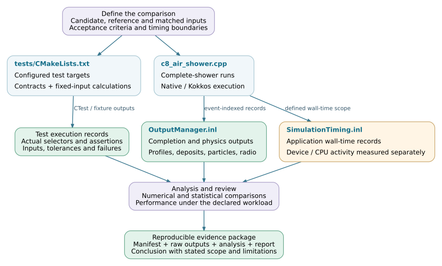

Validation and performance
Validation establishes that a change preserves the required interfaces, numerical behavior and physical observables. Performance measurement then determines its cost under a specified workload and resource configuration. The required evidence depends on the change: a queue refactor, a numerical solver and a new physical model need different comparisons.
This chapter connects the repository’s executable tests to numerical checks, complete-shower comparisons and timing reports. It describes how to prepare and interpret evidence; it does not report a new simulation campaign.
Note
Source baseline: d5297c43. Test registration documents available checks. A passing result also needs the tested revision, build, inputs and actual execution record. The pinned repository does not supply a universal acceptance threshold for every observable or a complete-shower certification for every backend.
Validation levels
Level |
Evidence |
Established scope |
|---|---|---|
Interface and lifecycle |
Header compilation, argument validation, ownership, queue accounting and output-completion tests. |
The exercised contracts and failure paths. This does not establish numerical accuracy or physical distributions. |
Numerical component |
Controlled inputs, specified random draws, reference values and documented tolerances. |
The tested calculation and input range, including identified boundary cases. Record whether the reference is independent of the candidate. |
Integrated backend |
Resident transport, material transitions, CPU completion, radio accumulation and session-reuse tests. |
Correct composition and state transfer for the fixtures exercised. Synthetic tables may deliberately isolate a contract from cross-section accuracy. |
Complete shower |
Matched physical settings, completed events and an ensemble comparison of profiles, energy accounting and radio observables. |
Agreement within the declared statistical and physical scope. Equal seeds alone do not establish equal particle histories. |
Performance |
Repeated timings with explicit measurement boundaries, hardware, workload, initialization and resource accounting. |
Cost for that workload and configuration, after the relevant correctness checks. A module speedup is not an end-to-end speedup. |
Reference selection
Several test fixtures retain an earlier production implementation to detect changes during reorganization. They are valuable regression references, but they can share an approximation or defect with the current implementation. Other fixtures use native C8 objects, real PROPOSAL calculators, analytic results or deliberately simplified numerical data. State which comparison a result actually makes.
For example, testLeptonTransport.cpp compares controlled transport results with the retained transport reference, whereas testCpuFallbackPhysics.cpp exercises real CPU reaction calculators. testMaterialBoundaryStatistics.cpp uses a linear range fixture to isolate actual firn-interface transport and record accounting; its success is not a validation of physical stopping power. These tests answer different questions and complement one another.
Use a reference appropriate to the intended claim:
Preserving an implementation: compare fixed inputs and state transitions, including failure status and random-state progression where required.
Checking a numerical method: compare residuals and errors with an independent result over the supported domain, including relevant tails.
Checking physical agreement: compare matched ensembles and observable definitions, with uncertainties and a predefined acceptance criterion.
See Numerical and statistical validation for reference tolerances, random-stream policy and whole-event comparisons.
Change-to-test mapping
The following map selects a starting point, not a substitute for reviewing the dependencies of a particular change. The numerical and execution chapters contain more detailed test maps.
Changed component |
Initial checks |
Integration evidence |
|---|---|---|
CLI, runtime or coordinator |
Configuration errors, device visibility, ownership, worker requests and cleanup. |
Direct/coordinated execution and multi-event reuse with the affected backend. See Build and backend portability and Execution and scheduling. |
Particle or environment representation |
Units, coordinates, history/node identity, host/device conversion, containment and boundary ordering. |
Transport through the affected geometry and materials, including observation handling. See Particle data and state and Environment and geometry. |
Tables, transport or final states |
Export/query consistency, solver domain, reaction selection and complete handling of device and CPU channels. |
Deposits, surviving particles, secondary products and profile accounting. See Physics models and table preparation and Transport and interaction kernels. |
Radio projection or accumulation |
Fixed tracks and observers, emission convention, propagation branches, time bins, accumulation and output conversion. |
Unfiltered waveforms and consistently defined derived observables. See Radio calculation. |
Launch policy, batching or worker reuse |
Queue counts, complete-state transfer, overflow/continuation paths, random-stream policy and output merging. |
Correctness before timing; include representative batch populations and complete events. See Performance measurement. |
Source organization
Paths are relative to the repository root. Tests can be registered from several directories; a single CTest label does not select all integration contracts.
tests/
├── CMakeLists.txt # Adds framework and optional Kokkos tests
├── framework/geometry/ # Native node/boundary references
├── application_support/ # CLI, coordinator and binding contracts
├── kokkos/
│ ├── runtime/ # Runtime ownership and execution primitives
│ ├── data/ # Particle data contracts
│ ├── environment/ # Export, queries and boundary tests
│ ├── em/ # Tables, physics and resident execution
│ ├── scheduling/ # Routing, deferral and scalar state transfer
│ ├── output/ # Profile and record accounting
│ └── radio/ # Projection, accumulation and propagation
└── output/ # Native output and lifecycle tests
cmake/
├── BackendRuntimeContracts.cmake # Production runtime test registration
└── BackendExecutionContracts.cmake # Backend and reused-session contracts
corsika/detail/output/
└── SimulationTiming.inl # Application timing boundaries and fields
src/kokkos/scheduling/
└── AirShowerCoordinator.cpp # Completion checks and process timings
The Test coverage and execution page identifies executable targets, registration conditions and useful selectors. Output file names and event-index conventions are described in Outputs and run checks.
Reproducible evidence
Keep the configuration, source/build identity, raw results and analysis together. A plot is a presentation of the evidence, not its replacement. For each comparison, record:
Record |
Required context |
|---|---|
Implementation |
Candidate and reference revisions, local patches, dependency/model-data versions, build options, compiler and runtime/device identity. |
Inputs |
Complete physics and observer settings, input files and checksums, event identifiers, seeds, stream policy and execution configuration. |
Execution |
Requested/completed/failed event counts, logs, exit statuses, backend completion records and any exclusions with their reasons. |
Analysis |
Comparison script and revision, units and normalization, statistical method, numerical/physical acceptance criteria and measured results. |
Timing |
Clock or profiler, start/end boundaries, cold versus reused events, repetitions, instrumentation and actual versus allocated resource time. |
The downloadable comparison manifest template provides a starting structure for these
records. It is a documentation template, not an application-generated schema
or an automated acceptance tool. Null values and empty arrays represent
information that must be supplied; they do not imply a successful check.
Preserve failed and excluded runs in the audit record. Process success and
COMPLETE.json establish completion of the corresponding execution checks,
not statistical agreement. Do not relabel an incomplete or inconclusive
comparison as a passing physics result.
Validation workflow
This workflow combines repository tests with a comparison prepared for the specific change. The links identify source entry points; the numerical and statistical analysis remains an explicitly recorded part of the validation.


Validation and performance evidence for a reviewed change. The diagram is
a maintainer workflow, not an automatic application pipeline.
SVG ·
Editable DOT source.